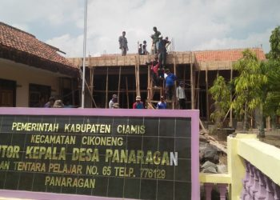

Selamat Datang
di Desa Cikoneng
Desa Cikoneng adalah Desa Terletak di Kota Ciamis

stuktur organisasi
Kode pos
46261
.
- Maman Suratman Sekertaris Desa
- Danni Daniana Kasi Pemerintahan
- Entis Sutisna Kaur Perencanaan
- Aceng Apip Kasi Kesejahteraan
- Irdan Maulana Kaur Keuangan
- Murni Mariani Suratman Kasi Pelayanan
- Rian Suryana Kaur Umum & TU
Contact
Need Help? Contact Us